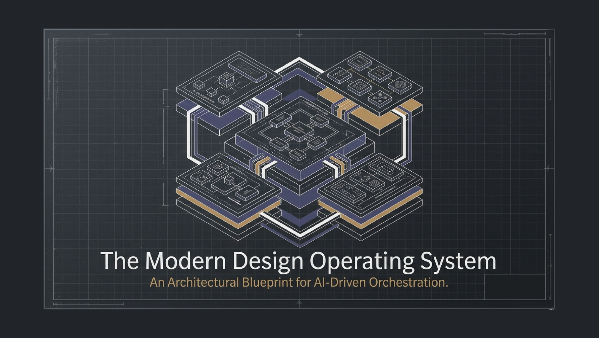
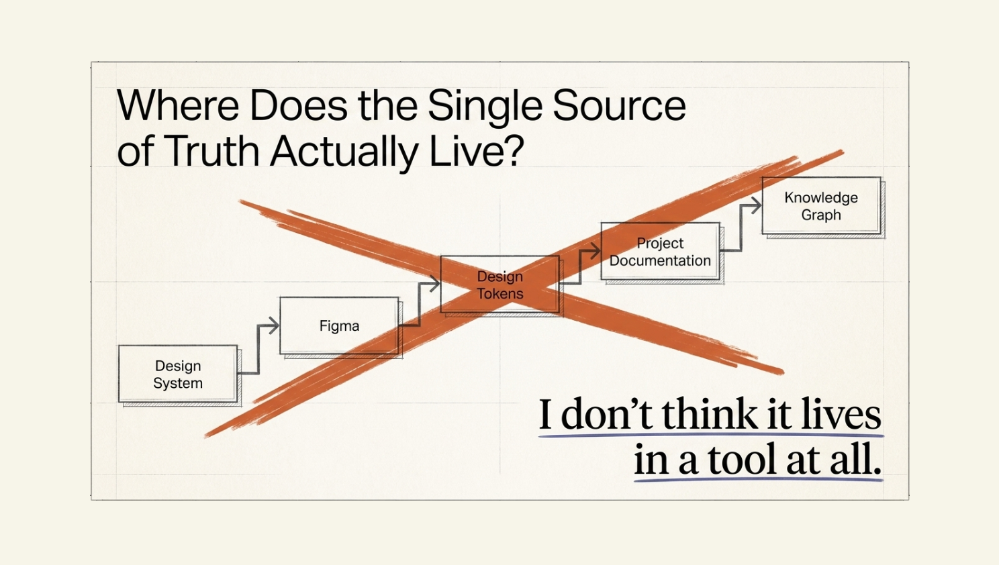
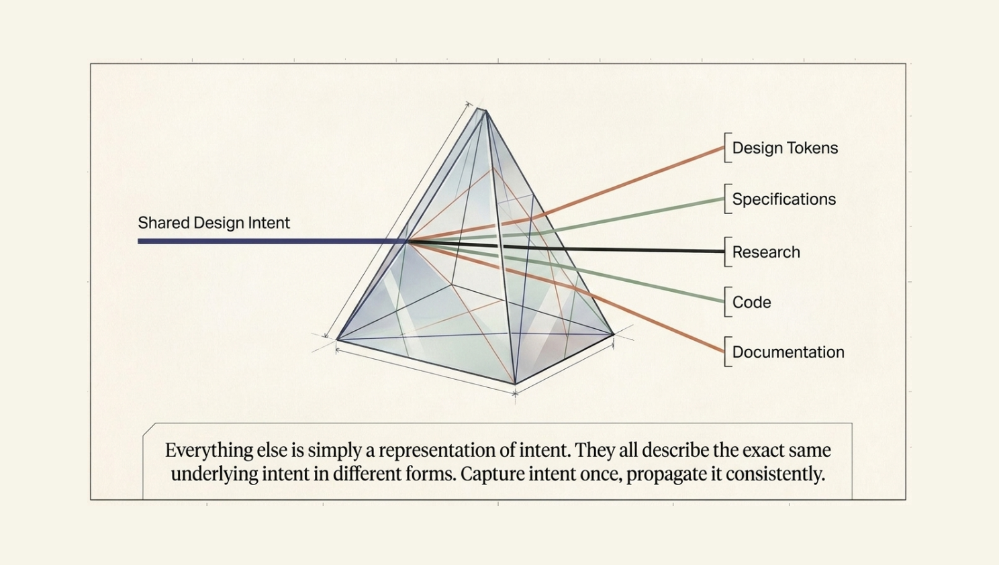

The question that started it
Most of my recent thinking about AI and design started with a relatively simple question: what happens when the direction of the workflow is reversed? Traditionally, digital product design moves from design into development. A designer creates screens, components and specifications, and eventually those decisions become code.
Modern AI-assisted development changes the equation. Working interfaces can now be generated, modified and iterated extremely quickly. That led me to a more fundamental question: if the product can now be generated from code, where does the design source of truth actually live?
Figma is excellent at representing design and collaboration, while code is excellent at representing behaviour. Documentation explains decisions, and analytics describes what happens in production. But none of these, individually, represents the complete design intelligence of a product. That became the starting point for a broader exploration.
From Design System to Knowledge System
I began exploring the idea that a design system should not simply contain colours, components and tokens; it should contain the knowledge behind the decisions. Patterns, behaviours, constraints, relationships, accessibility considerations, product rules, user insights, design rationale and implementation knowledge all contribute to the way a product behaves.
This shifted the mental model from Design System → Components → Screens towards Knowledge → Intelligence → Orchestration → Design → Product. The result was the concept of a Design Knowledge Operating System.
Rather than treating design knowledge as something stored in individual files, the system treats it as an evolving organisational asset that can be structured, connected, reused and continuously improved.

A new source of truth
The central idea is not to replace Figma, code or existing design tools, but to connect them. The source of truth becomes less about a single application and more about a shared layer of design intelligence sitting between knowledge, design and implementation. That layer can inform different outputs depending on the task.

- A designer might need a user journey.
- A developer might need implementation guidance.
- An AI agent might need component constraints.
- A product team might need the reasoning behind a particular interaction.
The underlying knowledge remains connected while the surface changes according to context. This creates a more resilient model of design, where knowledge survives beyond the individual artefact.
Start with the
human problem.
Translate an ambiguous request into a clear objective, with constraints and a definition of success. Human judgement supplies direction and accountability.
In this concept, the brief would also capture who is affected, what must remain protected and which decisions need a person’s judgement. Linking those intentions to existing research and product rules would help the system recognise when a request is incomplete or conflicts with established commitments.
Example intent: improve checkout accessibility.Context before
delegation.
Retrieve relevant knowledge, break down the workflow and decide which capability should act. Some steps need automation; others need a specialist or a human decision.
A proposed plan would make its dependencies and reasoning visible: which sources were retrieved, why an agent was selected and where review is required. If knowledge is missing, stale or contradictory, the orchestrator would need to surface that gap before directing work that depends on it.
Plan → retrieve → delegate → review.Make knowledge
usable by machines.
Connect research, product rules, tokens, components and decision history in a structured format. Preserve relationships, ownership and evidence so retrieval carries useful context.
Retrieval would need to distinguish an approved rule from a hypothesis, an exception or a superseded decision. A useful starting point would be one bounded workflow with a curated set of records, testing whether their connections provide enough context to answer a real design question.
Enterprise-scale data is a prerequisite for a useful knowledge layer.The right specialist.
The right task.
A research, UX, systems or accessibility specialist receives a bounded task and its relevant context. Review and approval remain part of the proposed workflow.
Each agent would return more than an artefact: its sources, assumptions, unresolved questions and a record of the decisions it made. That shared structure could help the next specialist continue the work with useful context, while making human review easier to follow.
Agent boundaries are still theoretical.Let evidence
inform the next step.
Feed research, product analytics and observed behaviour back into the knowledge layer. Review what changed before treating a new signal as an established truth.
The proposed loop would preserve what was learned alongside the conditions in which it applied. Versioned records could show why guidance changed and which decisions it affects, allowing future tasks to retrieve current context without losing the history needed to question it.
Observe → validate → update knowledge.From orchestration to collaboration
As the concept developed, it became clear that a single AI assistant was not enough. Different design problems require different forms of reasoning. Research, product strategy, UX, interaction design, design systems, content, accessibility, implementation and quality assurance each have different concerns.
I therefore began exploring a layered orchestration model in which specialised capabilities can contribute to a larger workflow, rather than attempting to make one model responsible for everything. At a high level, the process becomes:
Understand → Decompose → Reason → Create → Validate → Learn
The orchestration layer determines what needs to happen, which knowledge is relevant, which capabilities should contribute, and how the resulting work feeds back into the wider system. The intention is not autonomous design for its own sake, but controlled collaboration between human expertise, structured knowledge and AI capabilities.
The telemetry loop
The next question was what happens after the design has been delivered. Traditional design workflows often end when a screen is approved and handed over. Digital products do not: once something is live, users interact with it, behaviours emerge, problems are discovered and new information becomes available. That creates another opportunity.
Instead of a linear workflow, Design → Build → Release, the model becomes a continuous loop: Design → Build → Observe → Learn → Refine.
Telemetry, analytics, testing and qualitative feedback can become inputs into the knowledge layer. This creates the possibility of a system where design knowledge is not simply documented once, but progressively refined through real-world evidence. The result is a feedback loop between intention and behaviour.
Designing across the layers
What became particularly interesting was the relationship between the different layers of the product. A change to a component can affect an interface; an interface can affect a user journey; a journey can expose a product problem; and a product decision can require a change to the underlying design system. Rather than treating these as isolated activities, the operating-system approach considers their relationships.
This creates a more connected workflow across Product → UX → UI → Design System → Code → Runtime → Feedback. AI becomes the connective tissue between these layers, while people remain responsible for judgement, direction and accountability.
What I am exploring
This work is still an evolving body of thinking rather than a finished product. The interesting outcome for me has been the shift in perspective: I originally wanted to understand how AI could help move from working code back into design. That question eventually became: what if the real source of truth isn't the design file at all?
It could be the knowledge surrounding the product, its relationships, its decisions and the evidence continually generated by its use. That leads towards a different kind of design system—not a library of components, documentation or prompts, but an evolving knowledge and intelligence layer for digital product design.
The opportunity I see is a future where design can move fluidly between human judgement, structured knowledge, AI reasoning, working code and real-world product behaviour, without losing the context that connects them. That is the direction behind my exploration of the Design Knowledge Operating System.